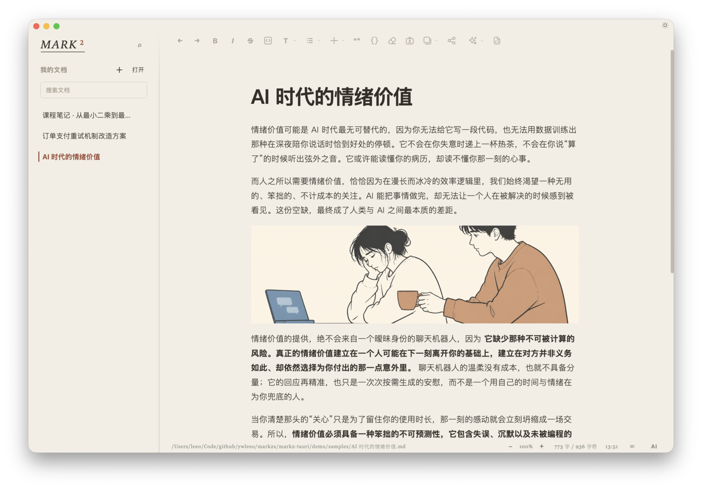
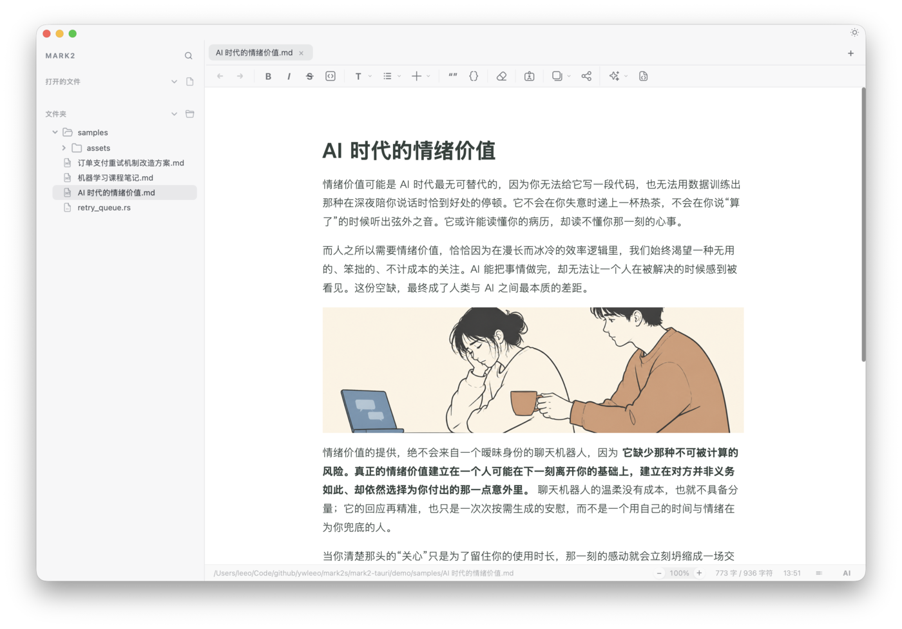
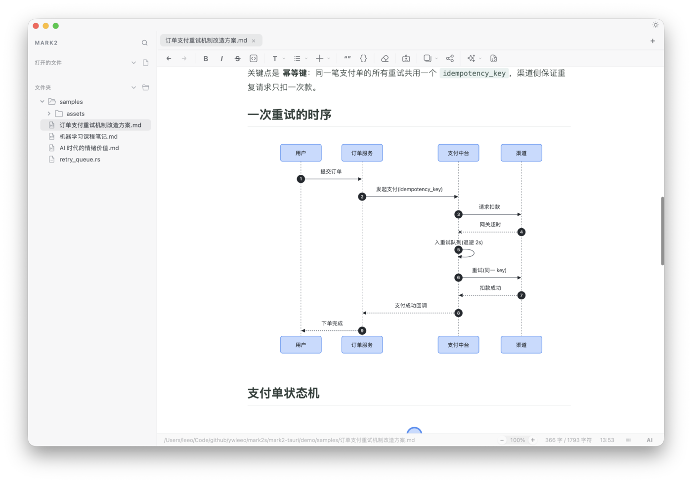
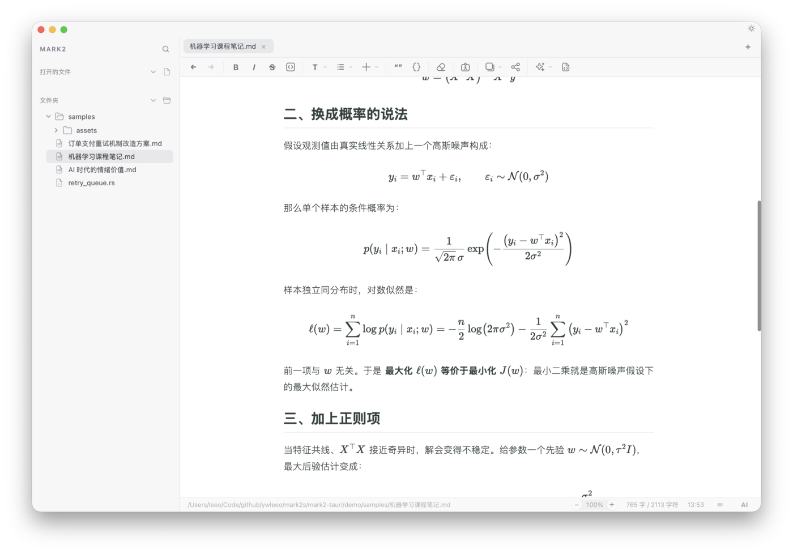
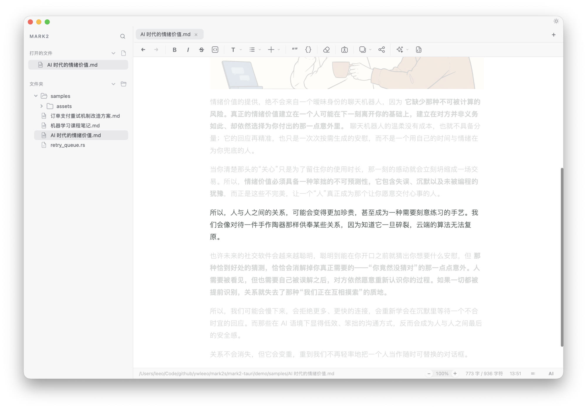
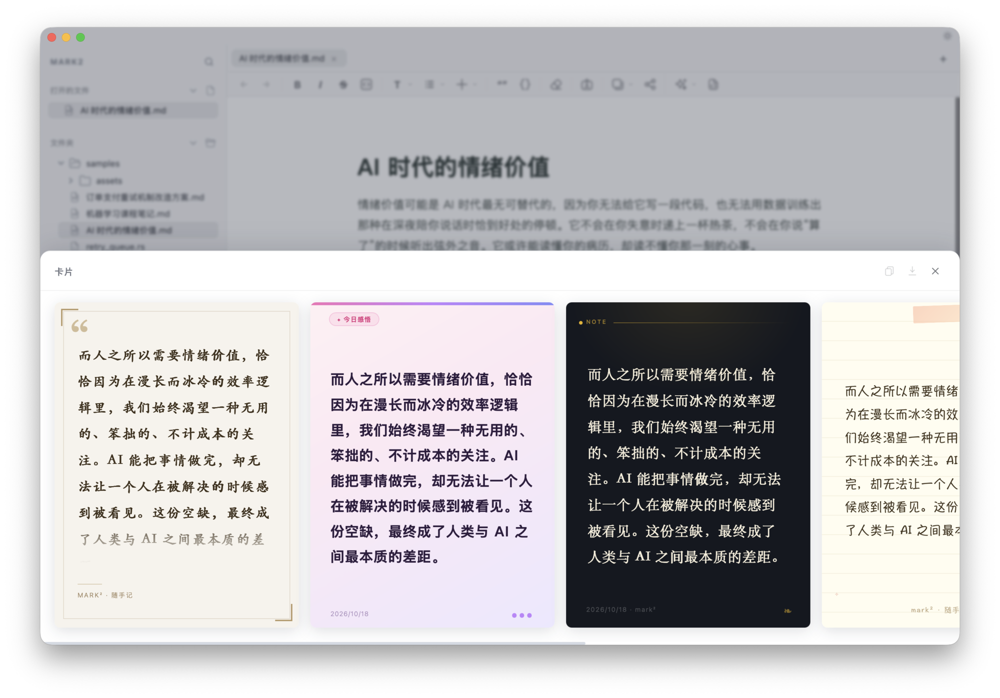

独立开发者
把做过的事讲清楚。
写一份设计方案、一篇发布说明，或一篇自己曾经需要的教程。代码、图表和推理，放在同一份文稿里。
Mac 上的 Markdown 工作区
为需要把事情讲清楚的人准备的 Markdown 工作区。带着资料开始，沿着思路写下去，把草稿变成值得分享的内容。
计划首发价 US$14.99 · 一次购买

从真实的工作开始
让技术方案、文章和学习笔记，都有一个从资料走向成稿的地方。
独立开发者
写一份设计方案、一篇发布说明，或一篇自己曾经需要的教程。代码、图表和推理，放在同一份文稿里。
技术作者
从资料中提炼结构，逐步完成文档。可视化 Markdown 与源码模式随时切换，不必反复更换工具。
内容创作者与学习者
整理阅读笔记，展开一篇文章，或起草一期通讯。留下有用的细节，找到贯穿其中的线索。
阅读 → 写作 → 修改 → 分享
读一点，写一点，把一件事解释得更清楚。整个过程，都在同一个工作区。
把资料和草稿放在一起。PDF、代码、图片和表格，都可以围绕当前正在写的内容展开。
可视化与源码编辑 · 文件夹工作区 · 文档大纲
在项目文件之间切换时，用经典模式；想专心面对一篇稿子时，用编辑部模式。专注与打字机模式，让你留在正在写的那句话里。
两种布局 · 专注模式 · 打字机模式
按需使用 AI 在光标处续写，对选中文字润色、翻译，或围绕当前文稿对话。是否采纳，仍由你决定。
自选服务商与 API Key · 模型服务费用另计
导出完整文稿，或把一段文字制作成图片卡片。需要链接分享时，可以使用自己的 GitHub Token 生成 Gist 页面。
文稿导出 · 图片卡片 · 可选 Gist 分享

用文字，也用图表和公式
讲清楚架构，推导一个公式，让图表分担文字的工作。

直接在 Markdown 中编写 Mermaid 流程图和时序图，维护说明时，也能一起维护图表。

KaTeX 公式、表格和代码块，为课程笔记、研究材料和技术文章提供清晰的表达。
看看真实界面
看看真实应用中的文稿、写作模式和卡片导出。
文章、配图，以及跟着写作节奏整理的文稿库。
文件、文件夹、文档大纲，还有你正在写的那篇稿子。

专注模式淡化周围段落，打字机模式让当前行保持居中。

选中文字，转换为具有排版风格的图片卡片。
文稿保存在你选择的文件夹，也可以继续在其他工具中使用。
恢复副本和版本历史帮助你回看之前的内容。恢复后先成为未保存修改，确认后再保存。
AI 与 Gist 分享需要取得授权。可以在设置中撤回后续共享许可。
MARK2 MAC 商店版
不拆分 Pro，不设置循环订阅。
适用于 Apple Silicon Mac · macOS 13 或以上
US$14.99
计划首发价 · 一次购买
Mac App Store · 即将上架
计划中的美国区首发价；其他地区以 Apple 显示的价格为准。新版上架后可在 Mac App Store 购买。
此前免费获取过商店版？已有使用权保留。
应用内的 AI 工具全部开放，但需要使用自己的服务商账号和 API Key。模型服务商可能另行收费，购买 Mark2 不包含调用额度。本地写作不依赖 AI。
保存在 Mac 的本地文件与应用数据中，无需注册 Mark2 云账号。使用可选 AI 或 Gist 功能时，只在授权后发送完成操作所需的内容。
当前大版本的小更新包含在购买中，未来重大升级可能单独收费。
现有发布包与更新暂时保留。之后会逐步转向只提供源码，以 Mac App Store 作为官方购买渠道。
Mac App Store 版仅适用于 Mac。官网目前聚焦这一版本，GitHub 上已有的发布包单独维护。